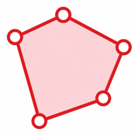

-27.4698, 153.0251
-27.4703, 153.0274
-27.4721, 153.0268
Free browser-based GIS tool
EditPolygon is a user-friendly but powerful online polygon editor for GIS professionals, emergency-management users and casual map users. Draw new geometry or import existing files to edit, inspect, validate, repair, simplify, compare and convert polygon data.
Work with GML, KML, KMZ, GeoJSON, TopoJSON, ESRI Shapefile ZIP, WKT and CSV polygon data. EditPolygon also supports its own project files and includes tools for image and GeoTIFF reference workflows.
Your imported geometry files are processed locally in your browser. They are not uploaded to or stored by EditPolygon. The application connects to third-party services when it loads map tiles, basemaps or place-search results, and those providers may receive normal web-request information such as your IP address.
EditPolygon can be opened on a phone or tablet, but detailed geometry editing works best on a desktop or laptop with a larger screen, mouse or trackpad.
Yes. EditPolygon is completely free to use and does not require an account.
No. Imported geometry is processed in your browser and is not uploaded to EditPolygon.
Yes. Polygon and MultiPolygon geometry can be imported, inspected and edited, including files containing multiple features or polygon parts.
Email feedback@editpolygon.com. Do not attach sensitive geometry unless you have permission to share it.
EditPolygon is provided as a general-purpose editing tool. You remain responsible for checking geometry, coordinate reference assumptions, file compatibility and exported results before using them for operational, legal, safety-critical or emergency-management decisions. Basemaps and search results are supplied by third-party providers and may be incomplete or inaccurate.

The mobile layout is fully functional for opening files, managing layers, selecting, inspecting, drawing and exporting. Detailed geometry editing is still easier on a desktop or laptop.